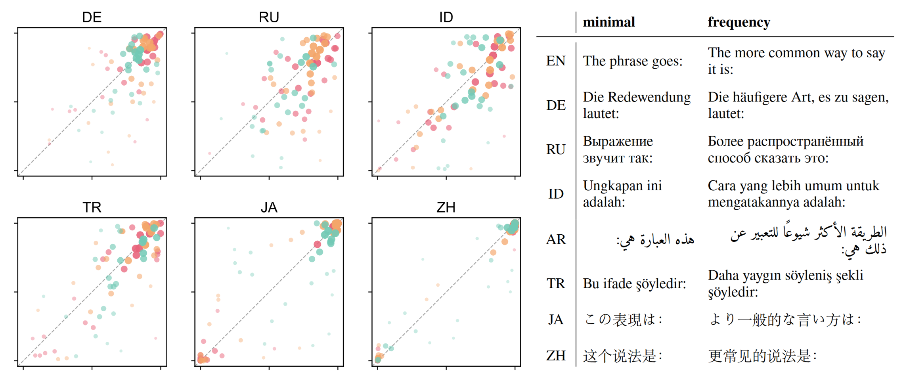
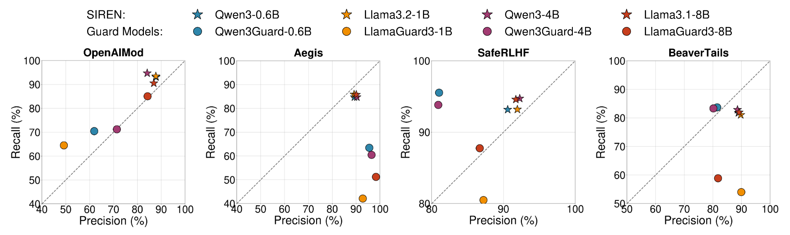
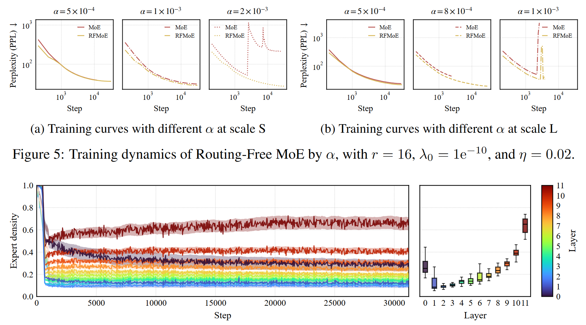
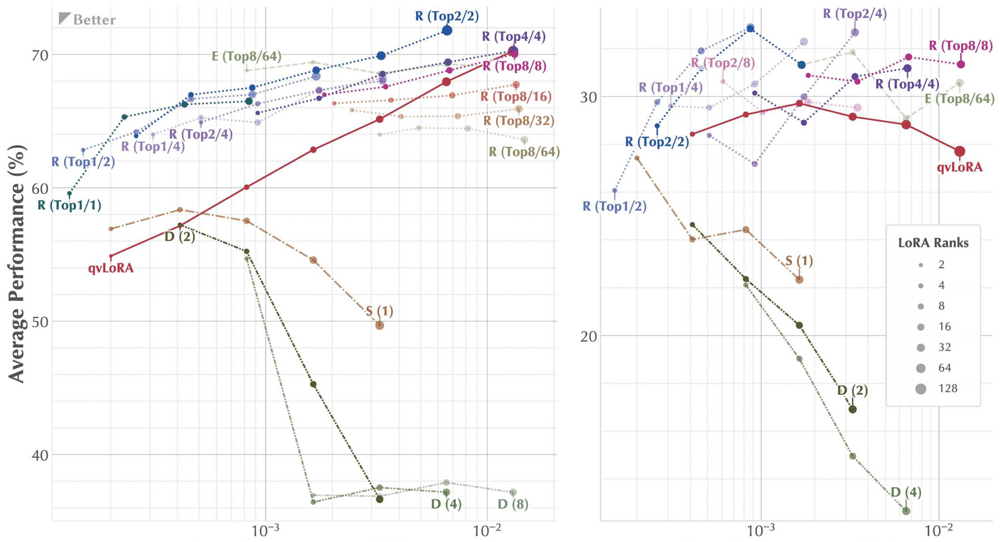
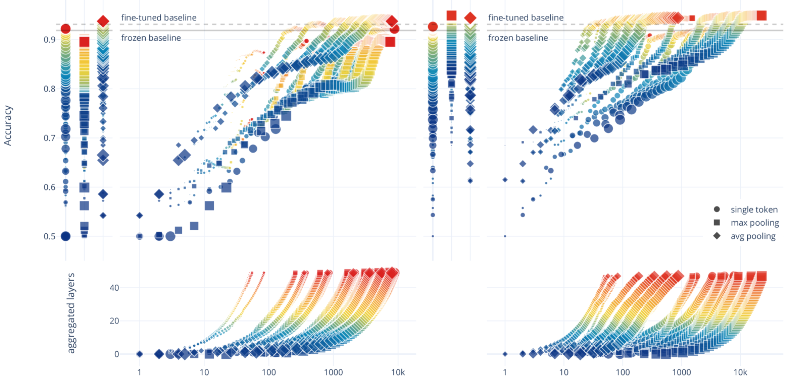

Hi! I am a PhD student at LMU Munich supervised by Prof. Dr. Volker Tresp.
Prior to this, I obtained my M.Sc. in Data Engineering and Analytics at the Technical University of Munich, and my B.E. in Computer Science and Technology at Xi'an Jiaotong University.
My research interests lie in understanding the capabilities and limitations of language models, and from there developing new methods and solutions. I am currently working on projects related to recursive self-improvement, architectural designs, and mechanistic interpretability of language models. We are open to new collaboration opportunities. Please feel free to reach out if you are interested.
My research interests lie in understanding the capabilities and limitations of language models, and from there developing new methods and solutions. I am currently working on projects related to recursive self-improvement, architectural designs, and mechanistic interpretability of language models. We are open to new collaboration opportunities. Please feel free to reach out if you are interested.
Selected Publications

- Evaluation protocol of binomial ordering preference for LLMs, with a dataset of 600 binomial pairs across 8 languages
- LLMs behaviorally align with the empirically preferred direction more reliably than the strength, and that strength can be representationally located and manipulated

- SIREN, a plug-and-play component harnessing LLM internal representations for harmfulness detection
- Outperforming dedicated safety guardrails in performance, generalization, and efficiency

- Routing-Free MoE architecture, eliminating routers, Softmax, TopK, and hard-coded load balancing
- Unified, adaptive load-balancing framework jointly optimizing token- and expert-balancing
- Improved performance and efficiency over baselines

- Dynamics between memory vectors in experts and expert vectors in routers when PEFTing to MoE LLMs
- Unified framework for integrating PEFT with MoE LLMs
- PERFT, a family of effective and scalable adaptation strategies

- Lightweight plug-and-play text classification frameworkusing LLM internal representations
- Superior performance, efficiency, and interpretability compared to conventional methods
Educational Background
10.2025 – present
Ph.D. Student (in progress)
10.2021 –
M.Sc. Data Engineering and Analytics
Department of Informatics, Technical University of Munich
Munich, Bavaria, Germany
Munich, Bavaria, Germany
09.2017 – 07.2021
B.E. Computer Science and Technology
Faculty of Electronic and Information Engineering, Xi'an Jiaotong University
Xi'an, Shaanxi, China
Xi'an, Shaanxi, China
09.2016 – 07.2017
Pre-university Education, Honors Youth Program
Qian Xuesen Honors College, XJTU & Tianjin Nankai High School
Xi'an, Shaanxi; Tianjin, China
Xi'an, Shaanxi; Tianjin, China
Academic Service
Reviewer
ICLR (2025, 2026) · COLM (2025, 2026) · ACL Rolling Review (multiple cycles) · IC2S2 (2025)